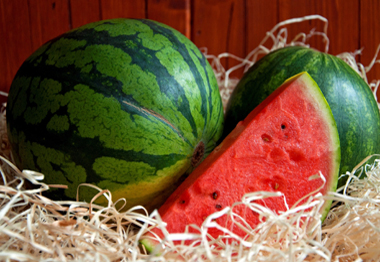

 তরমুজের গুনাগুন
তরমুজের পরিচিতি
প্রিয়নবী হযরত মুহাম্মদ (সঃ) এর প্রিয় ফলের মধ্যে তরমুজ ছিলো অন্যতম। তরমুজে রয়েছে
প্রায় ৯২% জলীয় উপাদান যা এই গরমে পানির অভাব পূরণ করতে খুবই কার্যকরি। এছাড়াও এতে
রয়েছে প্রচুর পরিমাণে পুষ্টিকর ভিটামিন ও মিনারেল বা খনিজ উপাদান।
তরমুজ এর আছে অনেক পুষ্টিগুণ। প্রতি ১০০ গ্রাম পাকা তরমুজে রয়েছে ৯২ থেকে ৯৫ গ্রাম
পানি, আঁশ ০.২ গ্রাম, আমিষ ০.৫ গ্রাম, চর্বি ০.২ গ্রাম, ক্যালোরি ১৫ থেকে ১৬ মি.গ্রাম।
। এছাড়াও তরমুজে ক্যালসিয়াম রয়েছে ১০ মি.গ্রাম,আয়রন ৭.৯ মি.গ্রাম, কার্বহাইড্রেট ৩.৫
গ্রাম, খনিজ পদার্থ ০.২ গ্রাম, ফসফরাস ১২ মিলিগ্রাম, নিয়াসিন ০.২ মিলিগ্রাম, ভিটামিন এ,
ভিটামিন সি, ভিটামিন বি ও ভিটামিন বি২।
তরমুজের গুনাগুন
১. চোখের সুরক্ষা
তরমুজে রয়েছে প্রচুর পরিমাণে বিটা ক্যারোটিন এবং ভিটামিন এ। বিটা ক্যারোটিন যা চোখের
রেটিনা সুরক্ষায় অত্যন্ত কার্যকর এবং চোখের ছানি পড়ার ক্ষেত্রে প্রতিবন্ধকতা সৃষ্টি
করে। ভিটামিন এ চোখের জ্যোতি বৃদ্ধি করে।
২. হৃদযন্ত্রে রক্ত সঞ্চালন
সঠিকভাবে হৃদযন্ত্রে রক্তপ্রবাহ অত্যন্ত গুরুত্বপূর্ণ। তরমুজ হৃদযন্ত্রে সঠিকভাবে
রক্তপ্রবাহ হতে সাহায্য করে। এতে হৃদযন্ত্রে ব্লক হওয়ার প্রবণতা অনেকটা হ্রাস পায়।
৩. হাড় মজবুত করে
তরমুজ লাইকোপিনো নামক লাল উপাদান যাতে রয়েছে প্রচুর ক্যালসিয়াম। তাই তরমুজ হাড় গঠন ও
মজবুত করতে অত্যন্ত সহায়ক।
৪. শরীরের চর্বি কমায়
তরমুজে রয়েছে প্রচুর পরিমাণে এমাইনো এসিড যা শরীরের কোলেস্টরেল ও চর্বি কমাতে অত্যন্ত
সহায়ক। এছাড়া তরমুজে রয়েছে এন্টি অক্সিডেন্ট যা শরীরের জমে থাকা কোলেস্টরেল কমাতে
সহায়তা করে।
৫. কিডনি ও লিভার সুরক্ষা
তরমুজে রয়েছে প্রচুর জলীয় উপাদান যা প্রস্রাবের জ্বালা কমায়, এটি কিডনি ও লিভার
সুরক্ষায় অত্যন্ত কার্যকর। তরমুজে রয়েছে এমন এন্টিবডি যা কিডনি ও লিভার সুরক্ষায়
অত্যন্ত কার্যকর।
৬. স্নায়ু ও মাংসপেশী সুরক্ষায়
তরমুজে রয়েছে প্রচুর পরিমাণ পটাশিয়াম এটি প্রাকৃতিকভাবে শরীরে ইলেকট্রো পাওয়ার তৈরি করে
যা শরীরের মাংসপেশী ও স্নায়ু সুরক্ষায় অত্যন্ত কার্যকর।
৭. ব্যথা নিরাময় ও শরীরের টিস্যু সুরক্ষায়
তরমুজে রয়েছে প্রচুর পরিমাণ ভিটামিনি সি যা শরীরের বিভিন্ন স্থানে ব্যথা নিরাময়ে এবং
ত্বক, দাঁত এবং মাংসপেশীর সুরক্ষায় প্রতিষেধক হিসাবে কাজ করে।